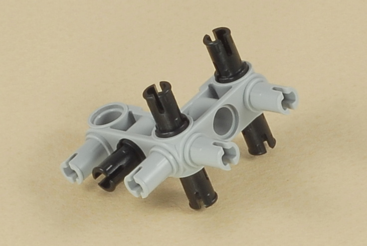
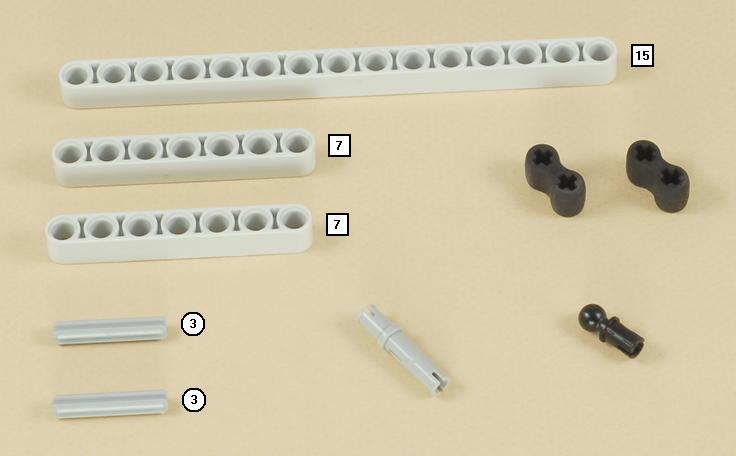
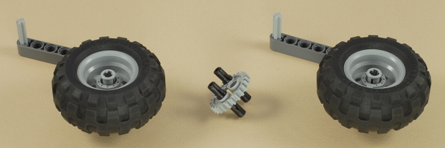
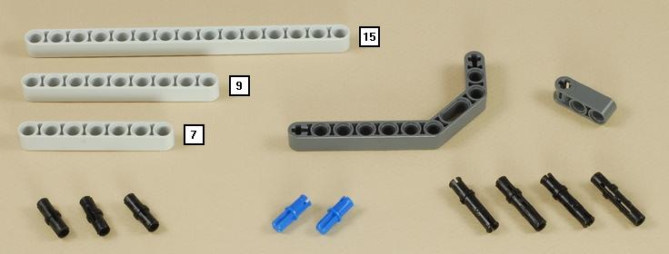

Fun Projects for your LEGO® MINDSTORMS® NXT!
|
|
Fun Projects for your LEGO® MINDSTORMS® NXT! |
| 3-Speed Transmission with Clutch |
|

1
2
3

4
5
| Important: After completing this step, check to make sure that all of the axles spin very easily. Adjust the position of the bushings, axle extenders, and other parts slightly as necessary to allow everything to spin and coast down easily. |
6
7

| Note: It is normal for the gears to get stuck when trying to shift with the shift lever when the gears are not turning. See the next step for testing and adjusting the gears. |
8
| Important: Now check to make sure that all of the gears are aligned properly as shown in the three pictures below. It is normal for the gears to get stuck when trying to shift with the shift lever when the gears are not turning, so grab the middle shaft as shown and twist back and forth slightly as you push in and out to find the three gear positions. |

9
10
11
12

| Note: After completing this step, you should check again to make sure that all of the parts spin easily. You should be able to spin the set of three tires, and they should coast easily by themselves in all three different gear positions. You should also now be able to shift gears using the shift lever if the tires are turning. |
13
14
15

16
17
18
19
20
21
| Note: The axle will need to bend slightly for this part to fit as shown below. This creates the spring force that keeps the clutch engaged when the clutch lever is not squeezed. |
22

23
24
| Note: The blue peg on the diagonal cross beam will normally not go into any hole. Inserting the peg into the hole in the bottom beam will lock the gas pedal down by keeping the touch sensor pressed. This is the "cruise control" feature. |
25
| Use the two longest wires to connect the motor to
port A and the touch sensor to port 1 on the NXT.
Keep the wires out of the way of the spinning tires and the clutch parts. |

|
3-Speed Transmission with Clutch Programming Use the Transmission program for your transmission. This program will make the motor respond to the gas pedal and display the motor speed (RPM) on the NXT's display. You could also use the Spin_A program if you want to simply control the motor power using the NXT buttons instead of the gas pedal. |
Using the Transmission
Shifting Gears Like a Real Car To practice shifting like a real car, try the following example sequence:
If you don't want to bother with the gas pedal, then you can keep it permanently pressed by engaging the "cruise control" feature to hold the touch sensor down, so you can operate with transmission with just two hands. Just insert the blue peg on the diagonal cross beam into the bottom beam.
When you are not using this model, it is a good ideas to disconnect the clutch axle "spring". This will help keep the axle from bending over time.
|
Challenges
|
|
Copyright
©
2007-2009 by Dave Parker. All rights reserved. |